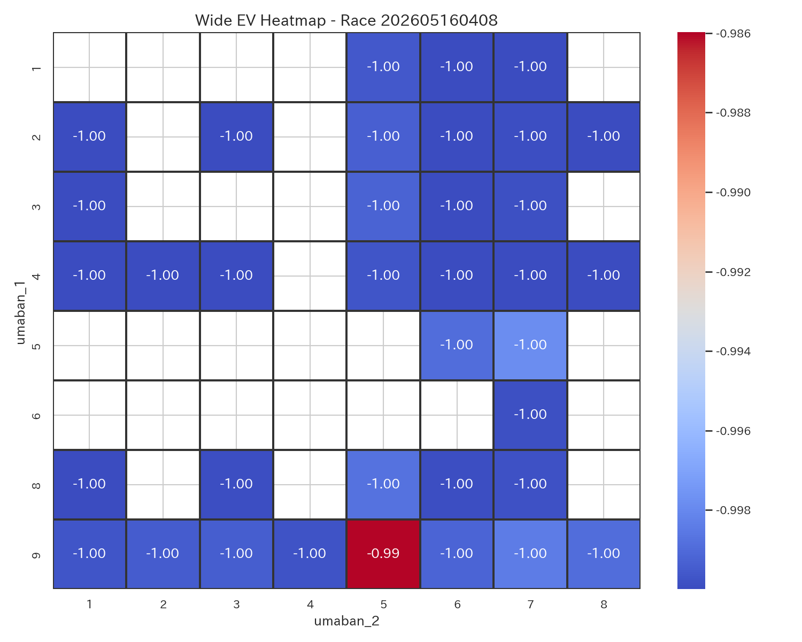
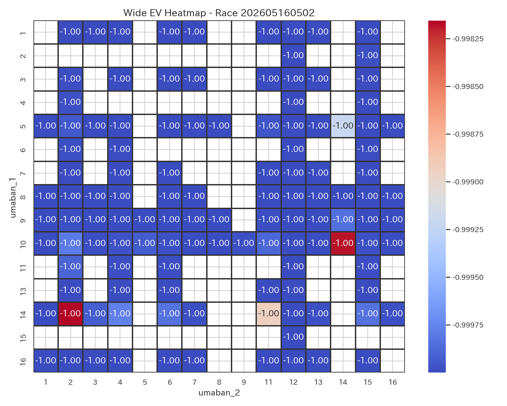
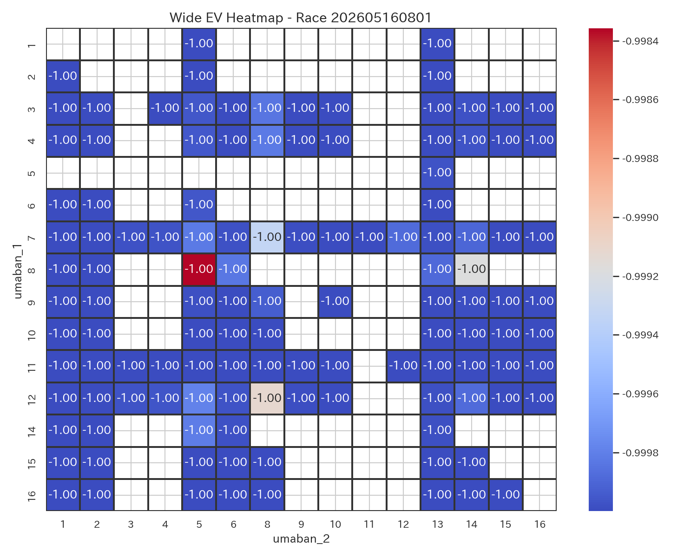
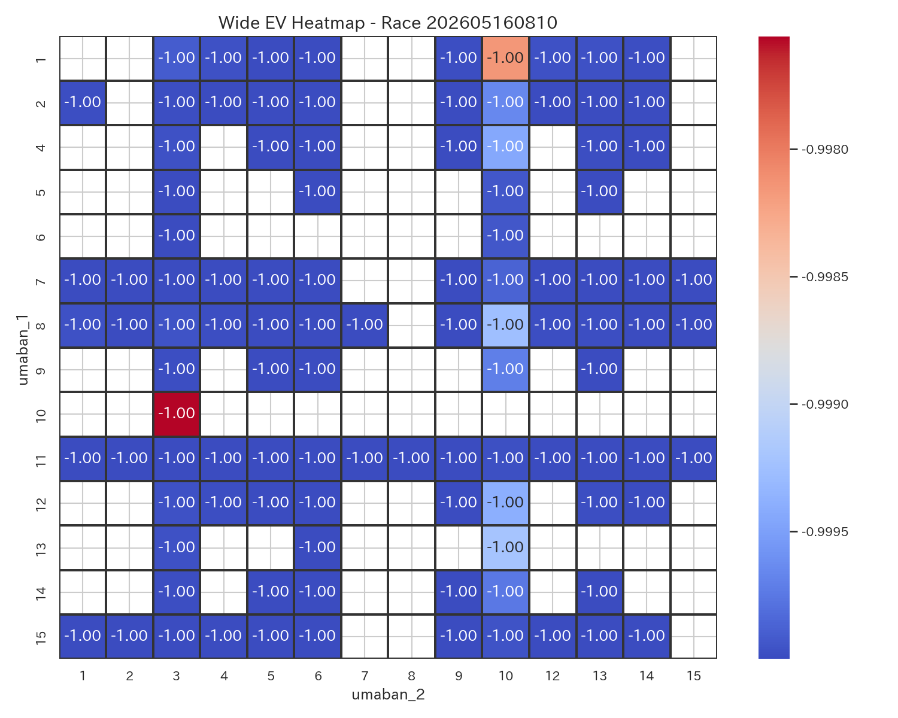

Daily Race Report
本日の的中サマリー
全レース EV ヒートマップ

レース別ワイド EV ヒートマップ
新潟1R

新潟4R

新潟8R

新潟10R

東京2R

東京9R

京都1R

京都2R

京都8R

京都10R

勝負レース一覧
| race_label_ui | race_score | difficulty_score | comment |
|---|---|---|---|
| 京都8R | 0.800000 | 0.350000 | 勝負度が非常に高いレースです。 堅い決着が見込まれるレースです。 本命は 4-5。 EV=-0.96, p_hit=0.012 とバランスが良好です。 次点候補は 4-1。 EV=-0.97。 適度なリスクで、標準的な賭け方が適しています。 |
| 新潟8R | 0.371011 | 0.334294 | 勝負度は低めで、慎重に扱いたいレースです。 堅い決着が見込まれるレースです。 本命は 9-5。 EV=-0.98, p_hit=0.006 とバランスが良好です。 次点候補は 9-6。 EV=-1.00。 適度なリスクで、標準的な賭け方が適しています。 |
| 新潟10R | 0.367322 | 0.335112 | 勝負度は低めで、慎重に扱いたいレースです。 堅い決着が見込まれるレースです。 本命は 4-5。 EV=-0.99, p_hit=0.005 とバランスが良好です。 次点候補は 4-1。 EV=-0.99。 適度なリスクで、標準的な賭け方が適しています。 |
| 東京9R | 0.366635 | 0.333912 | 勝負度は低めで、慎重に扱いたいレースです。 堅い決着が見込まれるレースです。 本命は 1-3。 EV=-0.99, p_hit=0.005 とバランスが良好です。 次点候補は 3-5。 EV=-0.99。 適度なリスクで、標準的な賭け方が適しています。 |
| 新潟1R | 0.359840 | 0.553563 | 勝負度は低めで、慎重に扱いたいレースです。 やや荒れやすい傾向があります。 本命は 7-8。 EV=-0.99, p_hit=0.005 とバランスが良好です。 次点候補は 3-8。 EV=-1.00。 適度なリスクで、標準的な賭け方が適しています。 |
| 新潟4R | 0.347687 | 0.404330 | 勝負度は低めで、慎重に扱いたいレースです。 比較的堅めの決着が期待できます。 本命は 10-7。 EV=-0.99, p_hit=0.004 とバランスが良好です。 次点候補は 10-11。 EV=-0.99。 適度なリスクで、標準的な賭け方が適しています。 |
| 京都2R | 0.329221 | 0.402426 | 勝負度は低めで、慎重に扱いたいレースです。 比較的堅めの決着が期待できます。 本命は 9-8。 EV=-0.99, p_hit=0.004 とバランスが良好です。 次点候補は 6-9。 EV=-0.99。 適度なリスクで、標準的な賭け方が適しています。 |
| 東京2R | 0.310946 | 0.587116 | 勝負度は低めで、慎重に扱いたいレースです。 やや荒れやすい傾向があります。 本命は 5-14。 EV=-0.99, p_hit=0.003 とバランスが良好です。 次点候補は 10-14。 EV=-1.00。 適度なリスクで、標準的な賭け方が適しています。 |
| 京都1R | 0.274278 | 0.581031 | 勝負度は低めで、慎重に扱いたいレースです。 やや荒れやすい傾向があります。 本命は 8-5。 EV=-0.99, p_hit=0.002 とバランスが良好です。 次点候補は 8-14。 EV=-1.00。 適度なリスクで、標準的な賭け方が適しています。 |
| 京都10R | 0.211683 | 0.533715 | 勝負度は低めで、慎重に扱いたいレースです。 比較的堅めの決着が期待できます。 本命は 10-3。 EV=-1.00, p_hit=0.001 とバランスが良好です。 次点候補は 1-10。 EV=-1.00。 適度なリスクで、標準的な賭け方が適しています。 |
買い目一覧
| race_label_ui | bet_type | selection_ui | umaban_1 | umaban_2 | bet_score | ev | p_hit | odds | return_amount | hit_status | is_nonstarter | is_nonstarter_1 | is_nonstarter_2 |
|---|---|---|---|---|---|---|---|---|---|---|---|---|---|
| 東京9R | wide | 1-3 | 1 | 3 | 0.450446 | -0.986047 | 0.004651 | 3.0 | NaN | 未確定 | 0 | 0 | 0 |
| 東京9R | wide | 3-5 | 3 | 5 | 0.388502 | -0.989166 | 0.003611 | 3.0 | NaN | 未確定 | 0 | 0 | 0 |
| 東京2R | wide | 5-14 | 5 | 14 | 0.357623 | -0.990160 | 0.003280 | 3.0 | 190.0 | 的中 | 0 | 0 | 0 |
| 新潟8R | wide | 9-5 | 9 | 5 | 0.524593 | -0.982358 | 0.005881 | 3.0 | NaN | 未確定 | 0 | 0 | 0 |
| 新潟8R | wide | 9-6 | 9 | 6 | 0.248964 | -0.996236 | 0.001255 | 3.0 | NaN | 未確定 | 0 | 0 | 0 |
| 新潟4R | wide | 10-7 | 10 | 7 | 0.409129 | -0.987936 | 0.004021 | 3.0 | NaN | 未確定 | 0 | 0 | 0 |
| 新潟4R | wide | 10-11 | 10 | 11 | 0.356759 | -0.990573 | 0.003142 | 3.0 | NaN | 未確定 | 0 | 0 | 0 |
| 新潟1R | wide | 7-8 | 7 | 8 | 0.461032 | -0.985445 | 0.004852 | 3.0 | 210.0 | 的中 | 0 | 0 | 0 |
| 新潟10R | wide | 4-5 | 4 | 5 | 0.457047 | -0.985721 | 0.004760 | 3.0 | NaN | 未確定 | 0 | 0 | 0 |
| 新潟10R | wide | 4-1 | 4 | 1 | 0.397115 | -0.988739 | 0.003754 | 3.0 | NaN | 未確定 | 0 | 0 | 0 |
| 京都8R | wide | 4-5 | 4 | 5 | 0.960000 | -0.964755 | 0.011748 | 3.0 | NaN | 未確定 | 0 | 0 | 0 |
| 京都8R | wide | 4-1 | 4 | 1 | 0.866051 | -0.969485 | 0.010172 | 3.0 | NaN | 未確定 | 0 | 0 | 0 |
| 京都2R | wide | 9-8 | 9 | 8 | 0.393625 | -0.988531 | 0.003823 | 3.0 | 0.0 | はずれ | 0 | 0 | 0 |
| 京都2R | wide | 6-9 | 6 | 9 | 0.381461 | -0.989144 | 0.003619 | 3.0 | 170.0 | 的中 | 0 | 0 | 0 |
| 京都1R | wide | 8-5 | 8 | 5 | 0.268409 | -0.994283 | 0.001906 | 3.0 | 300.0 | 的中 | 0 | 0 | 0 |
| 京都1R | wide | 8-14 | 8 | 14 | 0.239774 | -0.995724 | 0.001425 | 3.0 | 0.0 | はずれ | 0 | 0 | 0 |
| 京都10R | wide | 10-3 | 10 | 3 | 0.190858 | -0.997557 | 0.000814 | 3.0 | NaN | 未確定 | 0 | 0 | 0 |
レース別コメント
京都8R
勝負度が非常に高いレースです。 堅い決着が見込まれるレースです。 本命は 4-5。 EV=-0.96, p_hit=0.012 とバランスが良好です。 次点候補は 4-1。 EV=-0.97。 適度なリスクで、標準的な賭け方が適しています。
新潟8R
勝負度は低めで、慎重に扱いたいレースです。 堅い決着が見込まれるレースです。 本命は 9-5。 EV=-0.98, p_hit=0.006 とバランスが良好です。 次点候補は 9-6。 EV=-1.00。 適度なリスクで、標準的な賭け方が適しています。
新潟10R
勝負度は低めで、慎重に扱いたいレースです。 堅い決着が見込まれるレースです。 本命は 4-5。 EV=-0.99, p_hit=0.005 とバランスが良好です。 次点候補は 4-1。 EV=-0.99。 適度なリスクで、標準的な賭け方が適しています。
東京9R
勝負度は低めで、慎重に扱いたいレースです。 堅い決着が見込まれるレースです。 本命は 1-3。 EV=-0.99, p_hit=0.005 とバランスが良好です。 次点候補は 3-5。 EV=-0.99。 適度なリスクで、標準的な賭け方が適しています。
新潟1R
勝負度は低めで、慎重に扱いたいレースです。 やや荒れやすい傾向があります。 本命は 7-8。 EV=-0.99, p_hit=0.005 とバランスが良好です。 次点候補は 3-8。 EV=-1.00。 適度なリスクで、標準的な賭け方が適しています。
新潟4R
勝負度は低めで、慎重に扱いたいレースです。 比較的堅めの決着が期待できます。 本命は 10-7。 EV=-0.99, p_hit=0.004 とバランスが良好です。 次点候補は 10-11。 EV=-0.99。 適度なリスクで、標準的な賭け方が適しています。
京都2R
勝負度は低めで、慎重に扱いたいレースです。 比較的堅めの決着が期待できます。 本命は 9-8。 EV=-0.99, p_hit=0.004 とバランスが良好です。 次点候補は 6-9。 EV=-0.99。 適度なリスクで、標準的な賭け方が適しています。
東京2R
勝負度は低めで、慎重に扱いたいレースです。 やや荒れやすい傾向があります。 本命は 5-14。 EV=-0.99, p_hit=0.003 とバランスが良好です。 次点候補は 10-14。 EV=-1.00。 適度なリスクで、標準的な賭け方が適しています。
京都1R
勝負度は低めで、慎重に扱いたいレースです。 やや荒れやすい傾向があります。 本命は 8-5。 EV=-0.99, p_hit=0.002 とバランスが良好です。 次点候補は 8-14。 EV=-1.00。 適度なリスクで、標準的な賭け方が適しています。
京都10R
勝負度は低めで、慎重に扱いたいレースです。 比較的堅めの決着が期待できます。 本命は 10-3。 EV=-1.00, p_hit=0.001 とバランスが良好です。 次点候補は 1-10。 EV=-1.00。 適度なリスクで、標準的な賭け方が適しています。